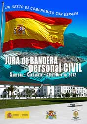
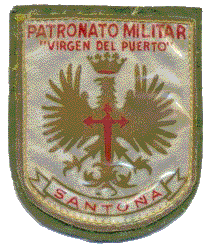
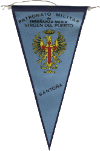
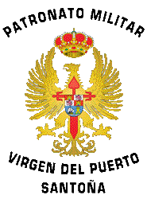
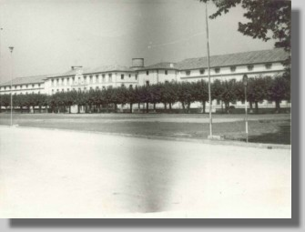

| Queridos amigos y compañeros del Patronato, a fin de tener una lista de correo a la que poder dirigirnos y recibir las noticias que se vayan produciendo, en el cuadrito de más abajo "suscríbete a patronato" tenéis el enlace para daros de alta en dicha lista. |
 |
 |
|
actualizado |
 |
 |
 |
SANTOÑA :Un bonito recuerdo
|  Por supuesto le dije que si. Mi ilusión por estar en un internado, conocer otros sitios, viajar, era algo que siempre había soñado. Así que, mi respuesta fue lo suficientemente vehemente que no di opción a que se pudiera reconsiderar tal oferta. Después vinieron los preparativos del viaje. Preparar la maleta, la ropa, debidamente marcada... tantos pañuelos, equis calzoncillos, no sé cuántas camisetas, las camisas... Recuerdo la cara de mi madre y de mi tita. Más de una lágrima cayeron mientras se hacía el petate. Después, finalizado el verano, la marcha a Madrid, donde se concentraba la expedición de los próximos ocupantes del viejo cuartel. De Toledo éramos dos, Ricardo Filgueira y yo. Salida de la Estación del Norte con rumbo a Santander en aquellos añorados trenes de vapor... Santander, el mar, la playa de Berria, el penal del Dueso y el colegio, frente a aquella enorme bahía de la que nos separaba una inmensa pradera verde, en donde se alzaba majestuoso, en su lado de poniente, el monumento al insigne marino Juan de la Cosa. He de decir que esos años fueron especialmente intensos y cuyo simple recuerdo, me hace sentir dentro de mi alma, una gran satisfacción. Los años vividos en aquél "viejo cuartel", remozado como instituto de enseñanza, en el que vivimos, los que tuvimos la gran suerte de inaugurar aquél centro, grandes momentos de aventura, felicidad e incertidumbre, no pasarán, por más que transcurra el tiempo, por la memoria ni el corazón de los escasos setenta alumnos que abrimos puertas y ventanas a un futuro renovador para aquella insigne institución. Recuerdos para el viejo Coronel, el capitán administrador, Don Abdón Muriel, Don Antonio (Antoine, pues era francés), el jefe de Estudios y capellán, las monjas mercedarias, Sor "Coño", Sor Tecla, Sor "China"..., los abnegados celadores, Carlos "Pachanga", que tocaba la guitarra, Don Felipe Tello, que nos instruía en deportes..., las "marmotas", con todo el respeto que nos merecían y así, un larguísimo etcétera. Personas difíciles de olvidar y que ahora, en esta página, traigo al recuerdo alguna de ellas. Espero antiguos compañeros que disfrutéis con estos recuerdos y si podéis ayudarme a enriquecer esta página con más recuerdos gráficos o con vivencias personales, me los hagáis llegar para darlos a conocer desde este pequeño rincón. De cualquier manera, queriendo ser punto de encuentro entre tantos compañeros que fueron y que después llegaron a serlo, por el simple hecho de haber compartido tan emblemático centro, y que hoy en día nos encontramos repartidos por toda la geografía de España, e incluso algunos, allende los mares, os dejo este foro para que nos sirva de encuentro y contacto, a fin de no perder nuestro recuerdo. Quisiera que me disculpárais por no poner los nombres de cuantos aparecéis en las fotos. La edad no perdona y hay muchos que no recuerdo bien. Por eso y para no "meter la pata", he evitado, por lo general, poner nombres. Eso os lo dejo a vosotros, para que entre todos me ayudéis y me los digáis, así los iré poniendo a medida que me lo vayáis indicando. Un afectuoso saludo a todos y a todas, que hicísteis posible con vuestra presencia, la amistad, camaradería, hermandad y pervivencia del Patronato Militar "Virgen del Puerto". Manuel
J. García Hueto.- 1ª Promoción.- 1960 ~ 1966.- Nº
111 |